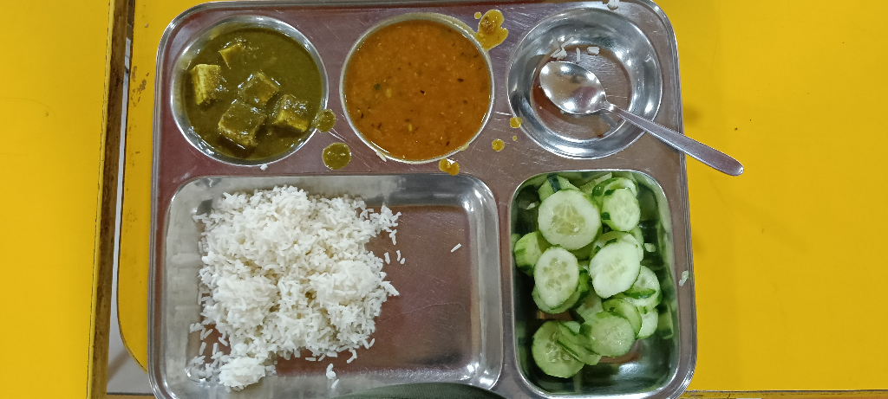
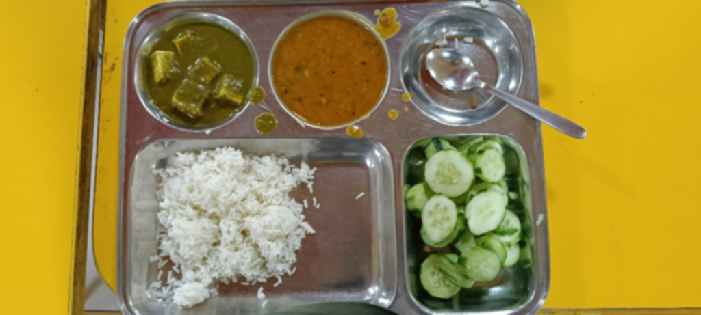
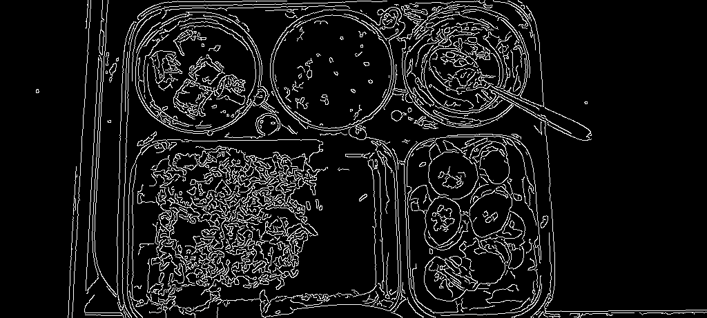
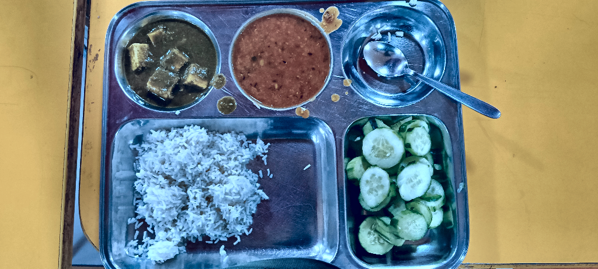
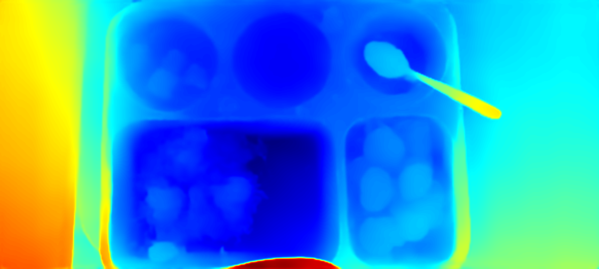
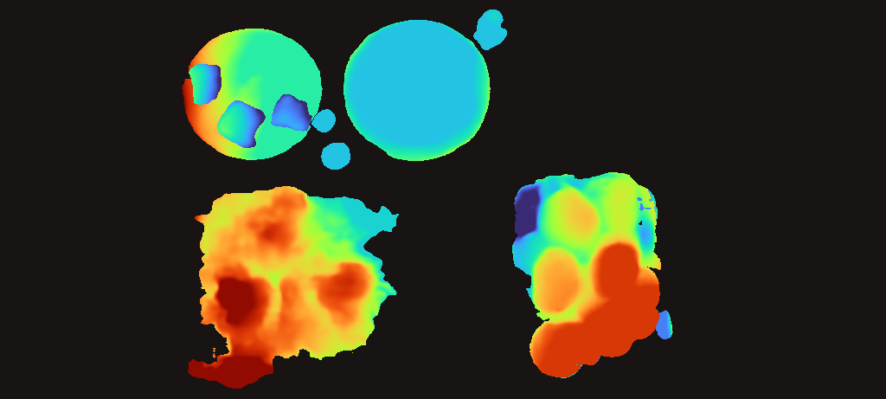
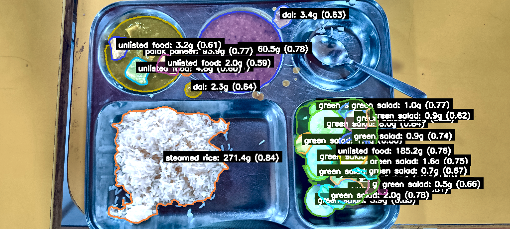

{
"resolution": "4080x1840",
"channels": 3,
"dtype": "uint8",
"expected_items": [
"chapati",
"green salad",
"palak paneer",
"steamed rice",
"cake",
"chutney",
"dal"
],
"plate_profile": "mess_tray_5comp",
"debug": true
}








[]
{
"item_id": "steamed rice_1",
"area_pixels": 39423,
"estimated_height_cm": 3.989,
"volume_estimate_ml": 262.8,
"density": 1.033,
"mass_g": 271.4,
"class_label": "steamed rice",
"class_confidence": 0.8433,
"depth_stability": 1.0,
"scale_confidence": 0.7,
"composite_confidence": 0.84,
"prior_applied": true
}{
"item_id": "green salad_2",
"area_pixels": 3944,
"estimated_height_cm": 1.655,
"volume_estimate_ml": 13.3,
"density": 0.6,
"mass_g": 8.0,
"class_label": "green salad",
"class_confidence": 0.8426,
"depth_stability": 1.0,
"scale_confidence": 0.7,
"composite_confidence": 0.8396,
"prior_applied": true
}{
"item_id": "green salad_3",
"area_pixels": 2234,
"estimated_height_cm": 1.467,
"volume_estimate_ml": 6.5,
"density": 0.6,
"mass_g": 3.9,
"class_label": "green salad",
"class_confidence": 0.814,
"depth_stability": 1.0,
"scale_confidence": 0.7,
"composite_confidence": 0.8253,
"prior_applied": true
}{
"item_id": "green salad_4",
"area_pixels": 2900,
"estimated_height_cm": 1.289,
"volume_estimate_ml": 7.7,
"density": 0.6,
"mass_g": 4.6,
"class_label": "green salad",
"class_confidence": 0.8089,
"depth_stability": 1.0,
"scale_confidence": 0.7,
"composite_confidence": 0.8227,
"prior_applied": true
}{
"item_id": "green salad_5",
"area_pixels": 1823,
"estimated_height_cm": 0.93,
"volume_estimate_ml": 3.3,
"density": 0.6,
"mass_g": 2.0,
"class_label": "green salad",
"class_confidence": 0.8074,
"depth_stability": 1.0,
"scale_confidence": 0.7,
"composite_confidence": 0.8219,
"prior_applied": true
}{
"item_id": "green salad_6",
"area_pixels": 2905,
"estimated_height_cm": 1.504,
"volume_estimate_ml": 9.1,
"density": 0.6,
"mass_g": 5.5,
"class_label": "green salad",
"class_confidence": 0.8048,
"depth_stability": 1.0,
"scale_confidence": 0.7,
"composite_confidence": 0.8206,
"prior_applied": true
}{
"item_id": "green salad_7",
"area_pixels": 2409,
"estimated_height_cm": 0.917,
"volume_estimate_ml": 4.3,
"density": 0.6,
"mass_g": 2.6,
"class_label": "green salad",
"class_confidence": 0.7849,
"depth_stability": 1.0,
"scale_confidence": 0.7,
"composite_confidence": 0.8104,
"prior_applied": true
}{
"item_id": "green salad_8",
"area_pixels": 878,
"estimated_height_cm": 1.281,
"volume_estimate_ml": 2.3,
"density": 0.6,
"mass_g": 1.4,
"class_label": "green salad",
"class_confidence": 0.7678,
"depth_stability": 1.0,
"scale_confidence": 0.7,
"composite_confidence": 0.8015,
"prior_applied": true
}{
"item_id": "green salad_9",
"area_pixels": 1203,
"estimated_height_cm": 1.185,
"volume_estimate_ml": 2.8,
"density": 0.6,
"mass_g": 1.7,
"class_label": "green salad",
"class_confidence": 0.7604,
"depth_stability": 1.0,
"scale_confidence": 0.7,
"composite_confidence": 0.7976,
"prior_applied": true
}{
"item_id": "green salad_10",
"area_pixels": 526,
"estimated_height_cm": 1.45,
"volume_estimate_ml": 1.5,
"density": 0.6,
"mass_g": 0.9,
"class_label": "green salad",
"class_confidence": 0.7352,
"depth_stability": 1.0,
"scale_confidence": 0.7,
"composite_confidence": 0.7843,
"prior_applied": true
}{
"item_id": "dal_11",
"area_pixels": 21771,
"estimated_height_cm": 1.636,
"volume_estimate_ml": 56.1,
"density": 1.078,
"mass_g": 60.5,
"class_label": "dal",
"class_confidence": 0.7277,
"depth_stability": 1.0,
"scale_confidence": 0.7,
"composite_confidence": 0.7803,
"prior_applied": true
}{
"item_id": "green salad_12",
"area_pixels": 1386,
"estimated_height_cm": 1.193,
"volume_estimate_ml": 3.4,
"density": 0.6,
"mass_g": 2.0,
"class_label": "green salad",
"class_confidence": 0.7256,
"depth_stability": 1.0,
"scale_confidence": 0.7,
"composite_confidence": 0.7792,
"prior_applied": true
}{
"item_id": "green salad_13",
"area_pixels": 601,
"estimated_height_cm": 0.925,
"volume_estimate_ml": 1.1,
"density": 0.6,
"mass_g": 0.6,
"class_label": "green salad",
"class_confidence": 0.7076,
"depth_stability": 1.0,
"scale_confidence": 0.7,
"composite_confidence": 0.7694,
"prior_applied": true
}{
"item_id": "palak paneer_14",
"area_pixels": 19113,
"estimated_height_cm": 2.796,
"volume_estimate_ml": 86.1,
"density": 1.09,
"mass_g": 93.9,
"class_label": "palak paneer",
"class_confidence": 0.7044,
"depth_stability": 1.0,
"scale_confidence": 0.7,
"composite_confidence": 0.7677,
"prior_applied": true
}{
"item_id": "green salad_15",
"area_pixels": 885,
"estimated_height_cm": 0.976,
"volume_estimate_ml": 1.6,
"density": 0.6,
"mass_g": 1.0,
"class_label": "green salad",
"class_confidence": 0.6996,
"depth_stability": 1.0,
"scale_confidence": 0.7,
"composite_confidence": 0.7651,
"prior_applied": true
}{
"item_id": "green salad_16",
"area_pixels": 698,
"estimated_height_cm": 1.11,
"volume_estimate_ml": 1.4,
"density": 0.6,
"mass_g": 0.8,
"class_label": "green salad",
"class_confidence": 0.6952,
"depth_stability": 1.0,
"scale_confidence": 0.7,
"composite_confidence": 0.7627,
"prior_applied": true
}{
"item_id": "green salad_17",
"area_pixels": 988,
"estimated_height_cm": 1.312,
"volume_estimate_ml": 2.6,
"density": 0.6,
"mass_g": 1.6,
"class_label": "green salad",
"class_confidence": 0.6706,
"depth_stability": 1.0,
"scale_confidence": 0.7,
"composite_confidence": 0.749,
"prior_applied": true
}{
"item_id": "green salad_18",
"area_pixels": 666,
"estimated_height_cm": 1.667,
"volume_estimate_ml": 2.3,
"density": 0.6,
"mass_g": 1.4,
"class_label": "green salad",
"class_confidence": 0.6587,
"depth_stability": 1.0,
"scale_confidence": 0.7,
"composite_confidence": 0.7424,
"prior_applied": true
}{
"item_id": "green salad_19",
"area_pixels": 818,
"estimated_height_cm": 1.031,
"volume_estimate_ml": 1.5,
"density": 0.6,
"mass_g": 0.9,
"class_label": "green salad",
"class_confidence": 0.6512,
"depth_stability": 1.0,
"scale_confidence": 0.7,
"composite_confidence": 0.7381,
"prior_applied": true
}{
"item_id": "green salad_20",
"area_pixels": 638,
"estimated_height_cm": 0.954,
"volume_estimate_ml": 1.1,
"density": 0.6,
"mass_g": 0.7,
"class_label": "green salad",
"class_confidence": 0.5341,
"depth_stability": 1.0,
"scale_confidence": 0.7,
"composite_confidence": 0.6685,
"prior_applied": true
}{
"item_id": "green salad_21",
"area_pixels": 502,
"estimated_height_cm": 1.105,
"volume_estimate_ml": 0.9,
"density": 0.6,
"mass_g": 0.5,
"class_label": "green salad",
"class_confidence": 0.5155,
"depth_stability": 1.0,
"scale_confidence": 0.7,
"composite_confidence": 0.6567,
"prior_applied": true
}{
"item_id": "dal_22",
"area_pixels": 850,
"estimated_height_cm": 1.538,
"volume_estimate_ml": 2.1,
"density": 1.066,
"mass_g": 2.3,
"class_label": "dal",
"class_confidence": 0.4932,
"depth_stability": 1.0,
"scale_confidence": 0.7,
"composite_confidence": 0.6424,
"prior_applied": true
}{
"item_id": "dal_23",
"area_pixels": 1238,
"estimated_height_cm": 1.565,
"volume_estimate_ml": 3.1,
"density": 1.07,
"mass_g": 3.4,
"class_label": "dal",
"class_confidence": 0.4734,
"depth_stability": 1.0,
"scale_confidence": 0.7,
"composite_confidence": 0.6293,
"prior_applied": true
}{
"item_id": "green salad_24",
"area_pixels": 720,
"estimated_height_cm": 1.168,
"volume_estimate_ml": 1.5,
"density": 0.6,
"mass_g": 0.9,
"class_label": "green salad",
"class_confidence": 0.4564,
"depth_stability": 1.0,
"scale_confidence": 0.7,
"composite_confidence": 0.6179,
"prior_applied": true
}{
"item_id": "dal_25",
"area_pixels": 535,
"estimated_height_cm": 1.538,
"volume_estimate_ml": 1.4,
"density": 1.065,
"mass_g": 1.4,
"class_label": "dal",
"class_confidence": 0.4513,
"depth_stability": 1.0,
"scale_confidence": 0.7,
"composite_confidence": 0.6145,
"prior_applied": true
}{
"item_id": "unlisted food_26",
"area_pixels": 31929,
"estimated_height_cm": 3.598,
"volume_estimate_ml": 185.2,
"density": 1.0,
"mass_g": 185.2,
"class_label": "unlisted food",
"class_confidence": 0.7955,
"depth_stability": 0.75,
"scale_confidence": 0.7,
"composite_confidence": 0.7592,
"prior_applied": false
}{
"item_id": "unlisted food_27",
"area_pixels": 1414,
"estimated_height_cm": 1.416,
"volume_estimate_ml": 3.2,
"density": 1.0,
"mass_g": 3.2,
"class_label": "unlisted food",
"class_confidence": 0.5098,
"depth_stability": 0.75,
"scale_confidence": 0.7,
"composite_confidence": 0.6078,
"prior_applied": false
}{
"item_id": "unlisted food_28",
"area_pixels": 2032,
"estimated_height_cm": 1.472,
"volume_estimate_ml": 4.8,
"density": 1.0,
"mass_g": 4.8,
"class_label": "unlisted food",
"class_confidence": 0.4965,
"depth_stability": 0.75,
"scale_confidence": 0.7,
"composite_confidence": 0.5998,
"prior_applied": false
}{
"item_id": "unlisted food_29",
"area_pixels": 1457,
"estimated_height_cm": 0.838,
"volume_estimate_ml": 2.0,
"density": 1.0,
"mass_g": 2.0,
"class_label": "unlisted food",
"class_confidence": 0.4874,
"depth_stability": 0.75,
"scale_confidence": 0.7,
"composite_confidence": 0.5943,
"prior_applied": false
}

{
"food_items": [
{
"name": "steamed rice",
"volume_ml": 262.8,
"mass_g": 271.4,
"calories": 279.6,
"protein": 5.4,
"carbs": 61.1,
"fat": 0.0,
"confidence": 0.84,
"class_label": "steamed rice",
"class_confidence": 0.8433,
"top_k": [
{
"label": "steamed rice",
"confidence": 0.8433,
"raw_similarity": 0.8433
}
],
"identification_status": "recognized",
"menu_match": true,
"matched_menu_item": "steamed rice",
"identification_confidence": 0.8433,
"segmentation_confidence": 0.8433,
"association_confidence": 1.0,
"menu_match_confidence": 1.0,
"depth_confidence": 1.0,
"scale_confidence": 0.7,
"food_name": "steamed rice",
"instance_count": 1
},
{
"name": "green salad",
"volume_ml": 68.2,
"mass_g": 41.0,
"calories": 15.6,
"protein": 0.4,
"carbs": 1.8,
"fat": 0.1,
"confidence": 0.8396,
"class_label": "green salad",
"class_confidence": 0.8426,
"top_k": [
{
"label": "green salad",
"confidence": 0.8426,
"raw_similarity": 0.8426
}
],
"identification_status": "recognized",
"menu_match": true,
"matched_menu_item": "green salad",
"identification_confidence": 0.8426,
"segmentation_confidence": 0.8426,
"association_confidence": 1.0,
"menu_match_confidence": 1.0,
"depth_confidence": 1.0,
"scale_confidence": 0.7,
"food_name": "green salad",
"instance_count": 19
},
{
"name": "dal",
"volume_ml": 62.7,
"mass_g": 67.6,
"calories": 90.2,
"protein": 4.9,
"carbs": 13.6,
"fat": 1.8,
"confidence": 0.7803,
"class_label": "dal",
"class_confidence": 0.7277,
"top_k": [
{
"label": "dal",
"confidence": 0.7277,
"raw_sim[
{
"step": "Input",
"message": "Original image saved",
"params": {
"resolution": "4080x1840"
},
"elapsed_s": 0.3004,
"input_file": null,
"output_file": "original.png",
"timestamp": "2026-11-12T13:09:38.261845"
},
{
"step": "Pipeline",
"message": "Step 1 — Preprocessing & Perspective Warp",
"params": {},
"elapsed_s": null,
"input_file": null,
"output_file": null,
"timestamp": "2026-11-12T13:09:38.261845"
},
{
"step": "Quality Gate",
"message": "PASS",
"params": {
"blur_score": 111.85,
"tilt_deg": 3.0
},
"elapsed_s": null,
"input_file": null,
"output_file": null,
"timestamp": "2026-11-12T13:09:38.462238"
},
{
"step": "Preprocessing",
"message": "Resize applied",
"params": {
"original": "4080x1840",
"target_long_edge": 1024,
"scale": 0.251
},
"elapsed_s": 0.0008,
"input_file": null,
"output_file": "01_resized.png",
"timestamp": "2026-11-12T13:09:38.488638"
},
{
"step": "Preprocessing",
"message": "Gaussian blur applied",
"params": {
"kernel": 5
},
"elapsed_s": 0.0008,
"input_file": null,
"output_file": "02_denoised.png",
"timestamp": "2026-11-12T13:09:38.511457"
},
{
"step": "Preprocessing",
"message": "LAB color normalization applied",
"params": {},
"elapsed_s": 0.1385,
"input_file": null,
"output_file": "03_color_normalized.png",
"timestamp": "2026-11-12T13:09:38.674963"
},
{
"step": "Preprocessing",
"message": "CLAHE contrast enhancement applied",
"params": {
"clip_limit": 2.0,
"tile_grid": "8x8"
},
"elapsed_s": 0.0046,
"input_file": null,
"output_file": "04_contrast_enhanced.png",
"timestamp": "2026-11-12T13:09:38.704176"
},
{
"step": "Preprocessing",
"message": "Canny edge detection",
"params": {
"low": 50,
"high": 150
},
"elapsed_s": 0.| Step | Message | Params | Time |
|---|---|---|---|
| Input | Original image saved | {"resolution": "4080x1840"} | 0.3004s |
| Pipeline | Step 1 — Preprocessing & Perspective Warp | — | — |
| Quality Gate | PASS | {"blur_score": 111.85, "tilt_deg": 3.0} | — |
| Preprocessing | Resize applied | {"original": "4080x1840", "target_long_edge": 1024, "scale": 0.251} | 0.0008s |
| Preprocessing | Gaussian blur applied | {"kernel": 5} | 0.0008s |
| Preprocessing | LAB color normalization applied | — | 0.1385s |
| Preprocessing | CLAHE contrast enhancement applied | {"clip_limit": 2.0, "tile_grid": "8x8"} | 0.0046s |
| Preprocessing | Canny edge detection | {"low": 50, "high": 150} | 0.0100s |
| Preprocessing | Warp skipped (no 4-pt contour) | {"warped": false} | — |
| Preprocessing | Complete | {"output_size": "1024x461"} | 0.4859s |
| Pipeline | Step 2 — Compartments & Scale | — | — |
| Compartment Detection | Detected 0 compartments | {"min_area_frac": 0.02, "max_area_frac": 0.9, "compartment_count": 0} | 0.0068s |
| Scale Calibration | Fallback to bbox-based calibration | {"cm_per_pixel": 0.04434, "method": "bbox"} | — |
| Compartment Detection | Scale computed | {"cm_per_pixel": 0.04434, "pixel_area_cm2": 0.00196573, "compartments": 0, "scale_confidence": 0.7} | 0.0460s |
| Pipeline | Step 3 — Depth Estimation | — | — |
| Depth Estimation | Depth Anything depth map computed (smoothed) | {"device": "cuda", "is_metric": true, "shape": [461, 1024], "min": -87.642, "max": -44.308} | 15.3402s |
| Depth Normalization | Surface normal plane subtracted from depth | {"baseline": -73.203, "fitted_plane": true, "is_metric": true} | 0.0327s |
| Depth Metric [cm] | Metric depth height in cm directly computed | {"cm_per_pixel": 0.04434, "min_cm": 0.0, "max_cm": 15.0, "mean_cm": 3.55} | 0.0015s |
| Depth Estimation | Complete | — | 15.4150s |
| Pipeline | Step 4–6 — SAM 3 Food Identification & Segmentation | — | — |
| SAM3 | Identified 29 food items (25 recognized, 0 unlisted, 4 uncertain) | — | 66.6091s |
| Pipeline | Step 7 — Volume & Mass Estimation | — | — |
| Volume Estimation | Computed mass for 29 items | {"total_items": 29} | 0.0860s |
| Pipeline | ✅ Pipeline complete | {"total_food_items": 29, "avg_confidence": 0.7382, "scale_method": "bbox"} | 83.0992s |